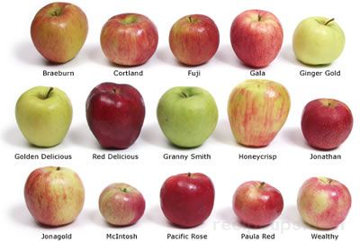

An apple is a sweet, edible fruit produced by an apple tree (Malus pumila). Apple trees are cultivated worldwide as a fruit tree, and is the most widely grown species in the genus Malus.
"An apple a day keeps the doctor away" is an old proverb that most of us are familiar with, but what makes this fruit so special? What health benefits are associated with eating apples? As one of the most cultivated and consumed fruits in the world, apples are continuously being praised as a "miracle food".
In fact, apples were ranked first in Medical News about the top 10 healthy foods.
Apples are extremely rich in important antioxidants, flavanoids, and dietary fiber.
The phytonutrients and antioxidants in apples may help reduce the risk of developing
There are many popular varieties of Apples, such as
Especially high in vitamin C, apples also provide vitamin A as a powerful antioxidant to help resist infection and scavenge free radicals that cause inflammation. They also contain a significant amount of fiber, which can help prevent absorption of LDL(bad) cholesterol.
Apple has many health benefits. It contains numerous vitamins such as vitamin A, B1, B2, B3, B5, B6 and vitamin C. The minerals such as calcium, zinc, iron, potassium, and magnesium are present in it. The antioxidant fitokimia lowers the level of bad cholesterol. Fibre reduces constipation and cholesterol. Apple also contains flavoid, tanin, baron, quercetin, tartaric acid and glucaric acid.
Here are some of the links which take you to amazing recipes made from apples.
check these websites and start to make delicious recipes and enjoy apple a day.
"An Apple a day keeps a doctor away!"
know about more fruits